<meta charset="utf-8">
<title>Puyallup, Not Yet Walked</title>
<link rel="stylesheet" href="https://fonts.googleapis.com/css2?family=Barlow+Condensed:wght@600;700&family=Source+Sans+3:wght@400;600;700&display=swap">
<style>
:root{--bg:#F1F0EA;--card:#FFFFFF;--line:#D8D6CC;--ink:#1B1E1A;--mute:#5F665D;--acc:#2A4D6E;--ok:#1F6B3A;--ok-bg:#E1EFE4;--warn:#9A6A16;--warn-bg:#F5EAD3;--bad:#B3372B;--bad-bg:#F4E1DD;--bezel:#15171A;--disp:'Barlow Condensed','Arial Narrow',Impact,sans-serif;--body:'Source Sans 3','Helvetica Neue',Arial,sans-serif}
@media (prefers-color-scheme: dark){:root:not([data-theme="light"]){--bg:#15181A;--card:#1E2226;--line:#2D3338;--ink:#ECEDE8;--mute:#9BA39C;--acc:#8DB4DA;--ok:#5BBE7C;--ok-bg:#1C3324;--warn:#D9A84A;--warn-bg:#36301F;--bad:#E5776A;--bad-bg:#3A221E;--bezel:#0B0C0E}}
:root[data-theme="dark"]{--bg:#15181A;--card:#1E2226;--line:#2D3338;--ink:#ECEDE8;--mute:#9BA39C;--acc:#8DB4DA;--ok:#5BBE7C;--ok-bg:#1C3324;--warn:#D9A84A;--warn-bg:#36301F;--bad:#E5776A;--bad-bg:#3A221E;--bezel:#0B0C0E}
*{box-sizing:border-box}body{margin:0;background:var(--bg);color:var(--ink);font:16px/1.4 var(--body);padding:16px 12px 60px}
main{max-width:1320px;margin:0 auto}h1{font:700 40px/0.95 var(--disp);text-transform:uppercase;margin:4px 0 4px}.lede{color:var(--mute);font-size:15px;margin:0 0 16px;max-width:60ch}
.grid{display:grid;grid-template-columns:repeat(auto-fill,minmax(360px,1fr));gap:22px 18px;justify-items:center}
.phone{margin:0;width:100%;max-width:400px}
figcaption{display:flex;align-items:center;gap:8px;flex-wrap:wrap;margin:0 0 8px;padding:0 4px}.name{font:600 21px/1 var(--disp);flex:1 1 auto}
.tag{font:700 10.5px/1 var(--body);letter-spacing:.06em;text-transform:uppercase;padding:4px 6px;border-radius:5px}.tag.ok{background:var(--ok-bg);color:var(--ok)}.tag.warn{background:var(--warn-bg);color:var(--warn)}.tag.bad{background:var(--bad-bg);color:var(--bad)}
.go{display:inline-flex;align-items:center;min-height:32px;padding:0 10px;border-radius:7px;border:1px solid var(--line);color:var(--acc);font-weight:700;text-decoration:none;font-size:14px}
.frame{background:var(--bezel);border-radius:44px;padding:14px;box-shadow:0 12px 30px rgba(0,0,0,.25)}
iframe{display:block;width:100%;aspect-ratio:390/844;border:0;border-radius:32px;background:#fff}
@media (max-width:420px){body{padding:12px 8px}.frame{padding:8px;border-radius:30px}iframe{border-radius:22px}}
</style><main><h1>Puyallup — 11 not yet walked</h1><p class="lede">Snapshots of each first screen. Tap one to open the live site. <a href="not-yet-walked-index.html" style="color:#8db4da">All towns</a></p><div class="grid"><figure class="phone"><figcaption><span class="pname">1. Kyoto Teriyaki Restaurant</span><a class="go small" href="https://hjsdesigns.github.io/demos/kyoto-teriyaki-puyallup/">Open</a></figcaption><a href="https://hjsdesigns.github.io/demos/kyoto-teriyaki-puyallup/" class="frame" style="display:block">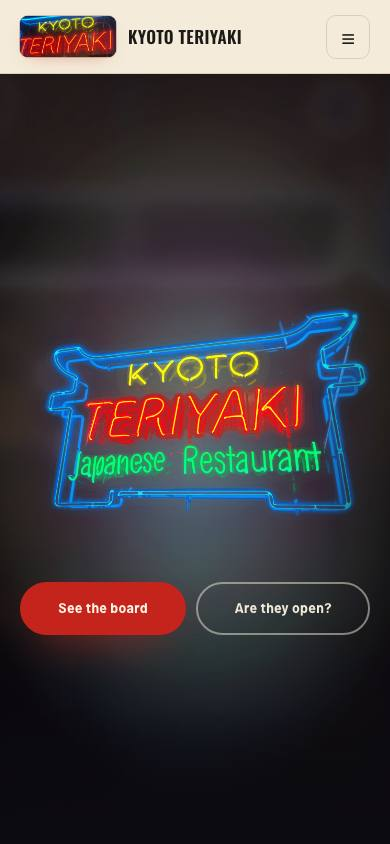</a><p class="note" style="font-size:12.5px;opacity:.6;margin:6px 2px 0">513 S Meridian, Puyallup, WA 98371</p></figure><figure class="phone"><figcaption><span class="pname">2. My Lil&#x27; Cube</span><a class="go small" href="https://hjsdesigns.github.io/demos/my-lil-cube-puyallup/">Open</a></figcaption><a href="https://hjsdesigns.github.io/demos/my-lil-cube-puyallup/" class="frame" style="display:block">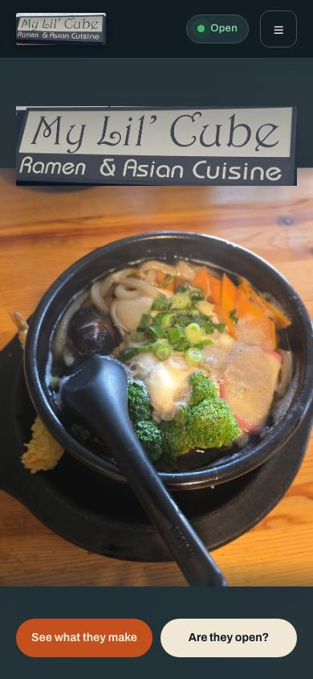</a><p class="note" style="font-size:12.5px;opacity:.6;margin:6px 2px 0">402 N Meridian, Puyallup, WA 98371</p></figure><figure class="phone"><figcaption><span class="pname">3. Out &amp; About Burgers</span><a class="go small" href="https://hjsdesigns.github.io/demos/out-and-about-burgers-puyallup/">Open</a></figcaption><a href="https://hjsdesigns.github.io/demos/out-and-about-burgers-puyallup/" class="frame" style="display:block">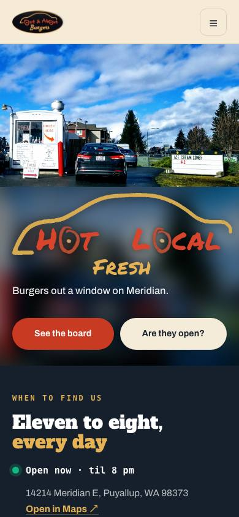</a><p class="note" style="font-size:12.5px;opacity:.6;margin:6px 2px 0">14214 Meridian E, Puyallup, WA 98373</p></figure><figure class="phone"><figcaption><span class="pname">4. Pioneer Antique Mall</span><a class="go small" href="https://hjsdesigns.github.io/demos/pioneer-antique-mall-puyallup/">Open</a></figcaption><a href="https://hjsdesigns.github.io/demos/pioneer-antique-mall-puyallup/" class="frame" style="display:block">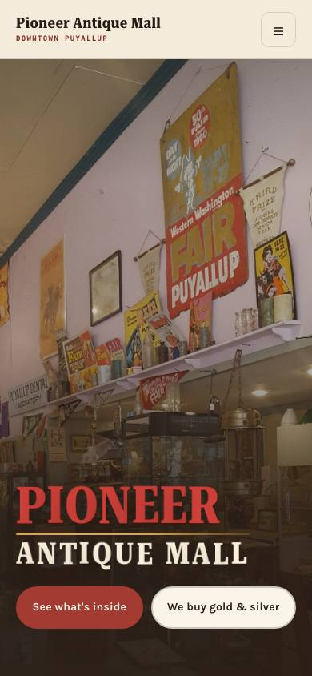</a><p class="note" style="font-size:12.5px;opacity:.6;margin:6px 2px 0">113 S Meridian, Puyallup, WA 98371</p></figure><figure class="phone"><figcaption><span class="pname">5. River Road Lodge</span><a class="go small" href="https://hjsdesigns.github.io/demos/river-road-lodge-puyallup/">Open</a></figcaption><a href="https://hjsdesigns.github.io/demos/river-road-lodge-puyallup/" class="frame" style="display:block">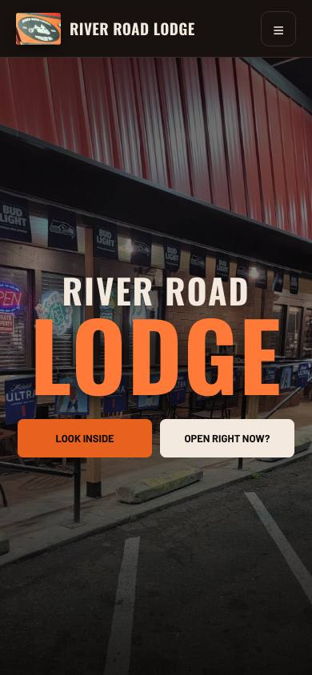</a><p class="note" style="font-size:12.5px;opacity:.6;margin:6px 2px 0">7824 River Rd E, Puyallup, WA 98371</p></figure><figure class="phone"><figcaption><span class="pname">6. Scotty&#x27;s Grub and Pub</span><a class="go small" href="https://hjsdesigns.github.io/demos/scottys-grub-and-pub-puyallup/">Open</a></figcaption><a href="https://hjsdesigns.github.io/demos/scottys-grub-and-pub-puyallup/" class="frame" style="display:block">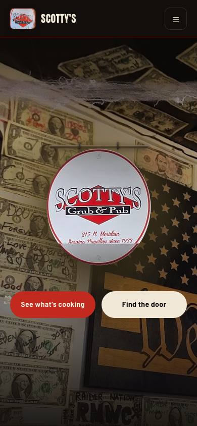</a><p class="note" style="font-size:12.5px;opacity:.6;margin:6px 2px 0">215 N Meridian, Puyallup, WA 98371</p></figure><figure class="phone"><figcaption><span class="pname">7. South Hill Nails</span><a class="go small" href="https://hjsdesigns.github.io/demos/south-hill-nails/">Open</a></figcaption><a href="https://hjsdesigns.github.io/demos/south-hill-nails/" class="frame" style="display:block">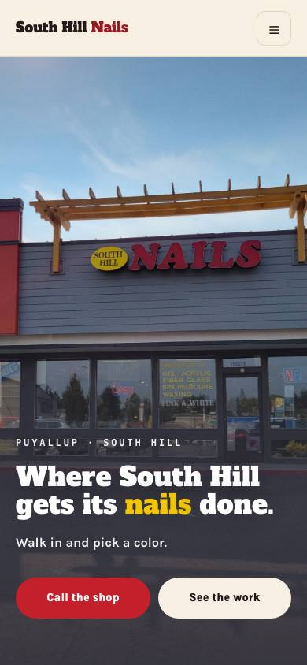</a><p class="note" style="font-size:12.5px;opacity:.6;margin:6px 2px 0">11910 Meridian E, Puyallup, WA 98373</p></figure><figure class="phone"><figcaption><span class="pname">8. TK Top Nails</span><a class="go small" href="https://hjsdesigns.github.io/demos/tk-top-nails-puyallup/">Open</a></figcaption><a href="https://hjsdesigns.github.io/demos/tk-top-nails-puyallup/" class="frame" style="display:block">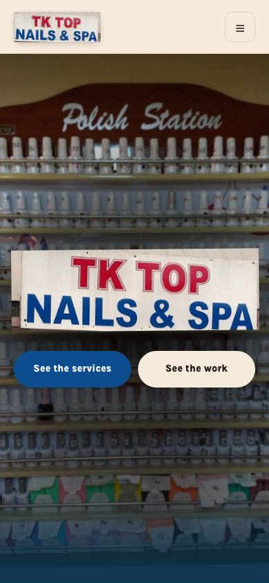</a><p class="note" style="font-size:12.5px;opacity:.6;margin:6px 2px 0">1831 E Main Ave, Puyallup, WA 98372</p></figure><figure class="phone"><figcaption><span class="pname">9. Teriyaki Town</span><a class="go small" href="https://hjsdesigns.github.io/demos/teriyaki-town-puyallup/">Open</a></figcaption><a href="https://hjsdesigns.github.io/demos/teriyaki-town-puyallup/" class="frame" style="display:block">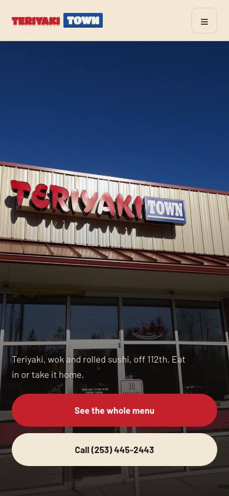</a><p class="note" style="font-size:12.5px;opacity:.6;margin:6px 2px 0">5605 112th St E, Ste 100, Puyallup, WA 98373</p></figure><figure class="phone"><figcaption><span class="pname">10. The Coffee Cabin</span><a class="go small" href="https://hjsdesigns.github.io/demos/the-coffee-cabin-puyallup/">Open</a></figcaption><a href="https://hjsdesigns.github.io/demos/the-coffee-cabin-puyallup/" class="frame" style="display:block">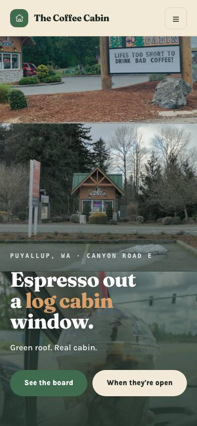</a><p class="note" style="font-size:12.5px;opacity:.6;margin:6px 2px 0">10418 Canyon Rd E</p></figure><figure class="phone"><figcaption><span class="pname">11. Wayne&#x27;s Inn Bar &amp; Grill</span><a class="go small" href="https://hjsdesigns.github.io/demos/waynes-inn-puyallup/">Open</a></figcaption><a href="https://hjsdesigns.github.io/demos/waynes-inn-puyallup/" class="frame" style="display:block">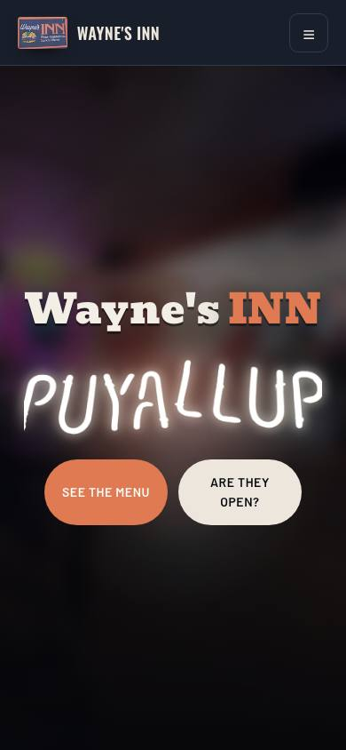</a><p class="note" style="font-size:12.5px;opacity:.6;margin:6px 2px 0">1902 E Main Ave, Puyallup, WA 98372</p></figure></div></main>